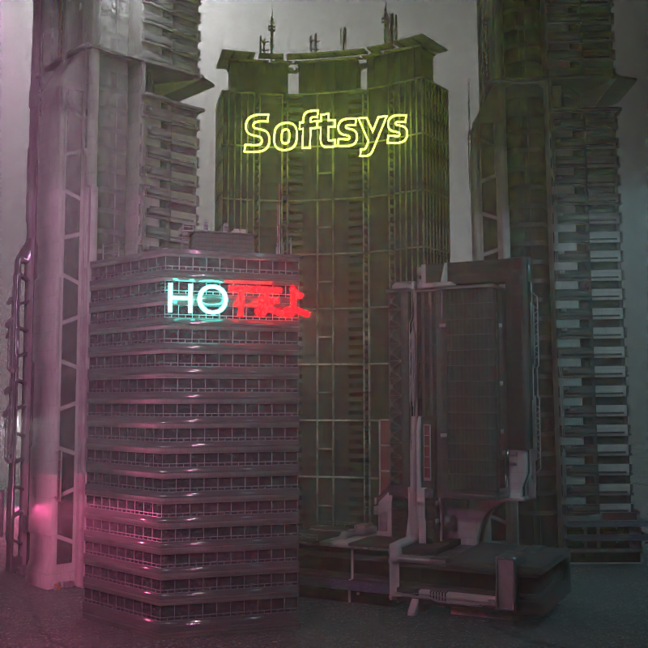
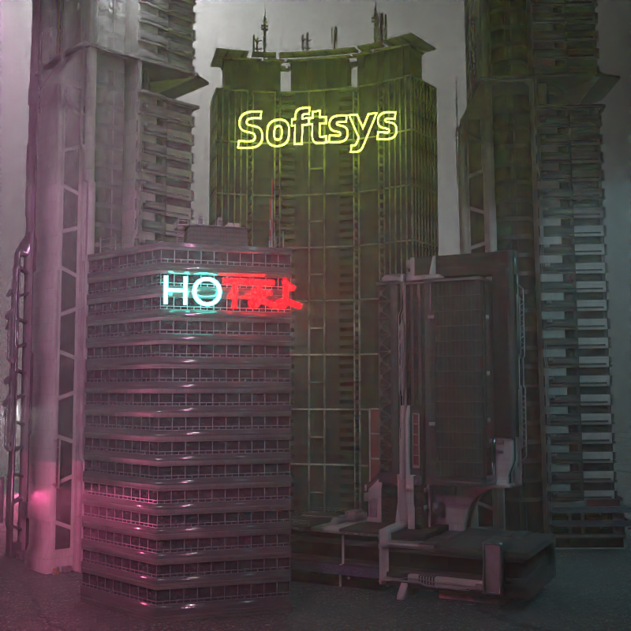

Story
Our scene showcases a glimpse of a cyberpunk-inspired city, populated with high-rise buildings,
with neon lights breathing life into it. Our city lies amidst dense fog, which adds to the eerie vibe of
our scene. The harmonious combination of the neon signs and buildings while showering in the ominous,
chaotic fog looming over the city encapsulates the theme of this rendering competition.
A person residing within the scene might have their visual sensors chaotically overstimulated, but
couldn't get enough of the eye-candy which our scene has to offer.
Click the image on the right to be redirected to full image
Scene

 
